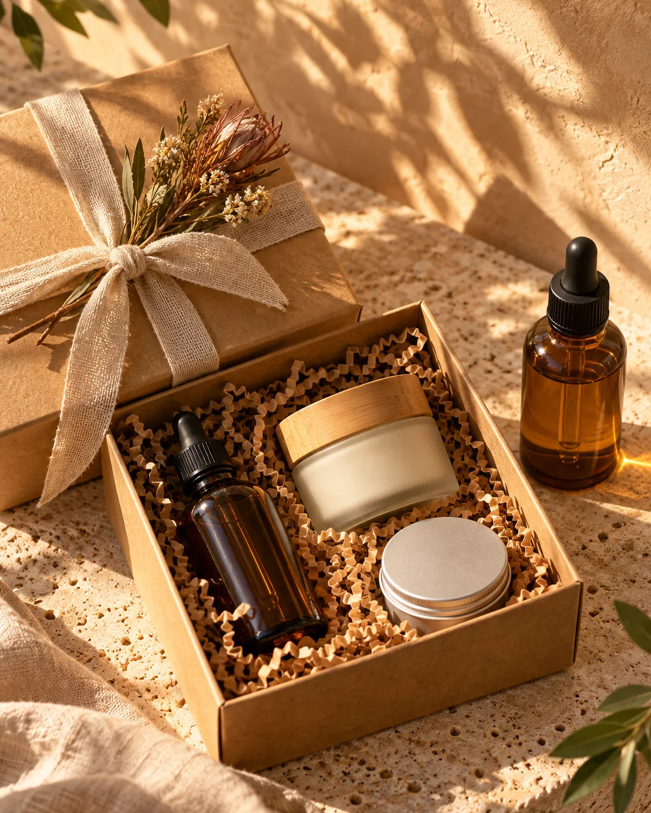
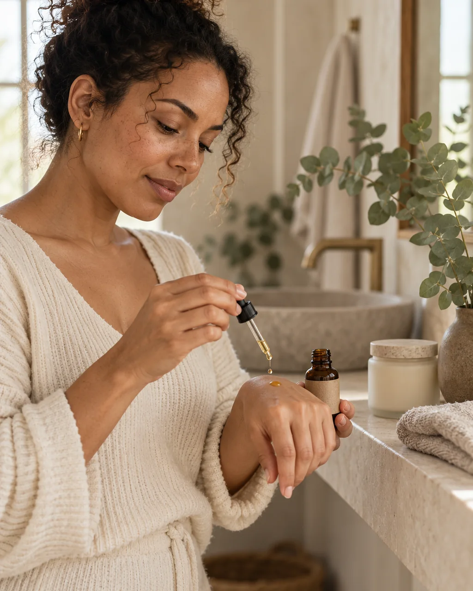
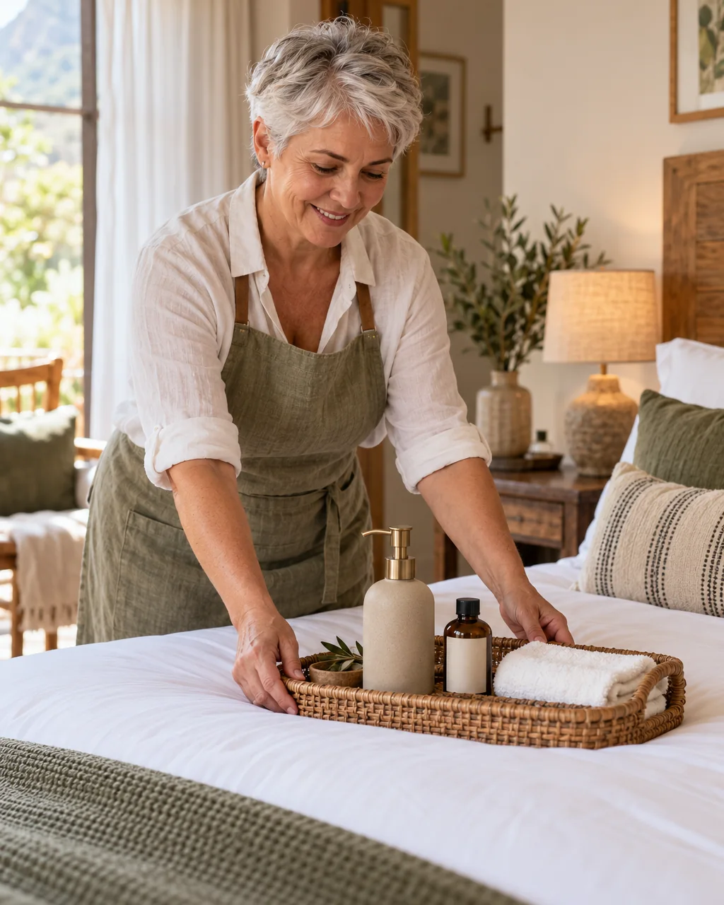
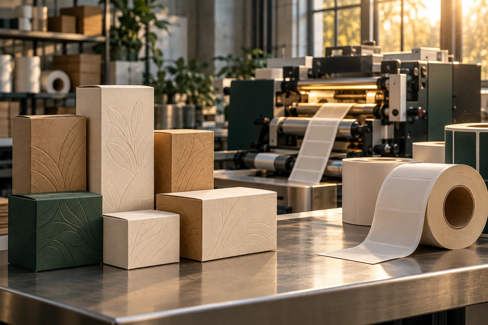
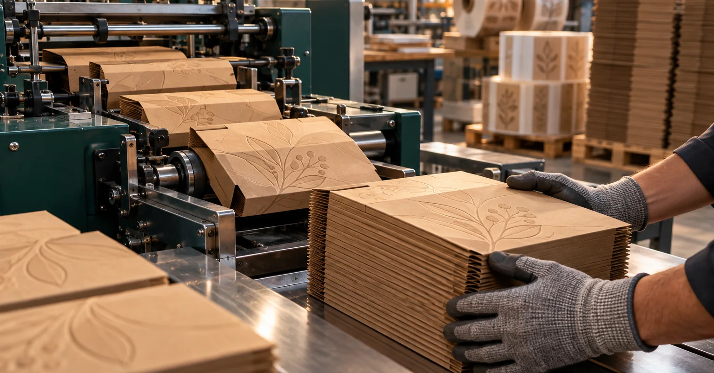
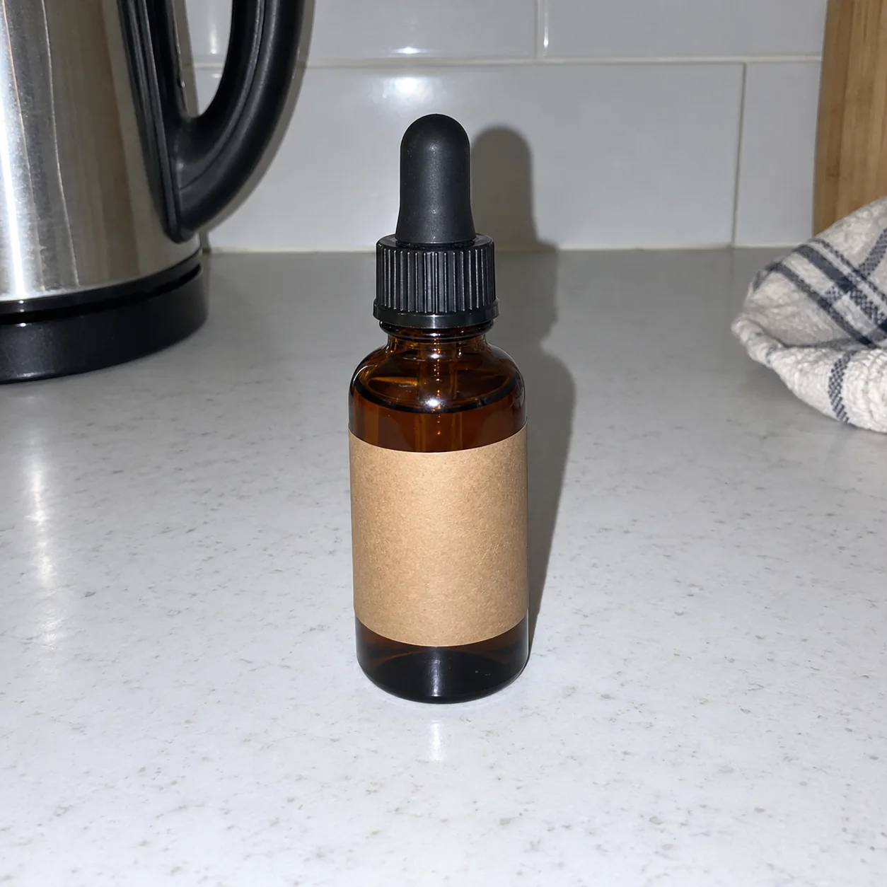
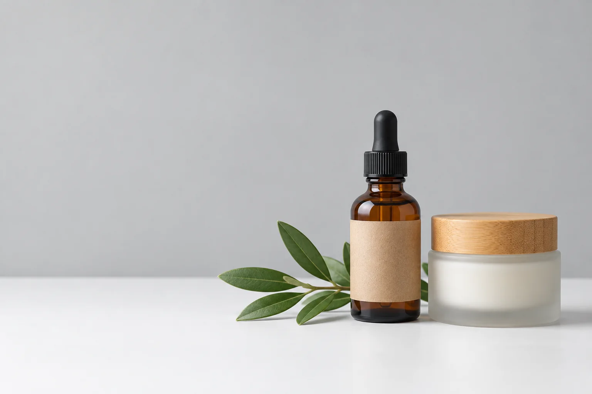

People respond to what you post, show or do. These catalysts turn into reactions.
A question answered→Comment
A striking picture→Like
An offer→Message
A story→Save

amberkloof Two drops at night. That’s it.
2401811
@thandi.m Is this OK for sensitive skin?
← Engagement got their attention.
While you have their attention, give them a clear next step.
You can’t convert people you don’t know. Who is @thandi.m, who just asked about sensitive skin?
@thandi.m Is this OK for sensitive skin?
Tactics
1Get their details while they are engaging
2Offer something of value: a newsletter, an email guide or a free sample
Amberkloof: a free 5 ml sample for an email. A step on the way to becoming a client.
Measure results from both ends.
EngagementConversion
FAILURES
No engagement, no conversion3 likes · 0 inquiries
Engagement, but no conversion1,200 likes · 0 inquiries
SUCCESSES
Drove both240 likes · 11 inquiries
WHYAnswered a real question
TO WHOMGift planners, 35-49
Illustrative sample, not research
All three are connected. Select one to bring it into focus.
Code-drawn stand-in · B1-M03 · media pending owner approval
Engagewith who?
Do you really know who buys from you?
You probably don’t know your ideal customer yet. Most owners don’t.
Your ideal customer profile (ICP) comes from your records, not a feeling.
What we assumedOur customer: women 25-34 who love natural skincareA feeling
GuessThumb-suckNot the biggest group
Start with the people who actually buy, inquire, and come back.
SaleInquiryRepeat+1 row
Optional checkout survey
Your age group?
Male or female?
What’s it for?
No data? You’re guessing.
Nothing goes into a public AI. Anonymised counts only, no names.
Your turn · 40 sWrite down your last ten customers and one thing they have in common.
BuyShop · markets
InquireWhatsApp · DMs
Come backRepeat orders
We look in the data. Illustrative sample, not research
Product
Area
Found us on
Repeat?
Age group
Sex
Circumstances
Race (if stated)
Gift set
Midrand
Instagram
No
35-49
M
Birthday gift
Not stated
Face oil
Pretoria East
Google
Yes
25-34
F
Sensitive skin
Not stated
Refill pack
Polokwane
Google Maps
Yes
45-59
F
Guesthouse rooms
Not stated
Gift set
Centurion
WhatsApp
Yes
35-49
M
December gift
Not stated
Body butter
Pretoria East
Market
Yes
35-44
F
Reorders monthly
Not stated
Gift set
Midrand
Instagram
No
35-49
M
Wants it wrapped
Not stated
Illustrative sample, not research (60 orders). Tap a group.



Picture pending · B1-M11a
ICP · Illustrative sample, not research
The Gift Planner
Age group
35-49
Sex
Men 71% · Women 29% checkout survey
Area
Midrand and Centurion
Circumstances
Busy, buys gifts twice a year, wants it wrapped and delivered
Found us on
Instagram, orders on WhatsApp
Race
Only if they tell you
ICP · Illustrative sample, not research
The Self-care Regular
Age group
25-44
Sex
Men 14% · Women 86% checkout survey
Area
Pretoria East
Circumstances
Sensitive skin, reorders every month or two
Found us on
Google and the Saturday market
Race
Only if they tell you
ICP · Illustrative sample, not research
The Guesthouse Owner
Age group
45-59
Sex
Men 20% · Women 80% checkout survey
Area
Polokwane and towns on the N1
Circumstances
Stocks guest rooms, buys refill packs in bulk
Found us on
Google Maps
Race
Only if they tell you
Race is special personal information under POPIA. Record it only when customers choose to tell you, never guess it.
ICP · Tumelo Print & Pack · Illustrative sample, not research
The Launching Founder
Industry
Small product brands: skincare, candles, sauces, coffee
Company size
1-10 staff
Area
Gauteng
Buyer role
The founder-owner
Circumstances
Launching or rebranding, needs 500-2,000 units before a market date
Found us on
Google search and LinkedIn
Same method: quotes, orders and reorders are the records.
Test it on your next 10 orders.
Get to know them from your records.
Works in any industry. A salon: bookings and rebookings. A plumber: call-outs and repeat clients. A label printer: quotes and reorders.
Code-drawn stand-ins · B1-M03, B1-M11a · media pending owner approval
ENGAGE · WHERE?
Where do they spend their time?
Don't try to be everywhere. Pick 2 or 3 places, and know why.
VOLUNTEER · BEFORE ANYTHING RUNS
May we look at your business?
We'll scan your public pages and socials and use your questionnaire answers about your business. Anthropic (Claude), Firecrawl and Apify process them to run the tools; Tool A's notice adds Supabase and Resend. No customer contact details. Deleted after 30 days.
30/60/90 plan, part 1Skill loaded: seo-plan.waiting
30/60/90 plan, part 2Skill loaded: blog-calendar.waiting
THE GIFT PLANNERTHE LAUNCHING FOUNDER · TUMELO35-49 · Midrand and Centurion · buys twice a yearFounder of a small product brand · Gauteng · 500-2,000 unitsVolunteer answers: waiting
Text wordmarks · logo pending brand-terms acceptance
Pick a platform
amberkloofPretoria East
♥ 212✉ 9⚑ Save
amberkloof The gift set, wrapped and ready for Friday. Order on WhatsApp.
AmberkloofBusiness account
Hi, is the gift set still available for Friday?
It is. Wrapped, with a card. Shall I keep one for you?
Yes please. One.
Done. I'll send the payment link now.
Demo chat
⌕ gift shop near me
AmberkloofNatural skin care · Pretoria EastOpen until 17:00 · Directions · Call
Demo listing
AmberkloofSponsored
Birthday next week? We wrap it and deliver it.
One drop. Watch it sink in.
Tumelo Print & PackLabel and carton printer · Johannesburg

500 kraft gift boxes for a market date. Printed, folded and delivered in six working days.
⌕ natural face oil Pretoria
⌕ custom product labels Johannesburg
amberkloof.exampleMarula Face Oil · Amberkloof, Pretoria EastSmall-batch face oil. Two drops at night. Collect or delivery.
tumelo.exampleCustom labels and gift boxes · Tumelo Print & PackShort runs from 500. Proof in 24 hours.
Demo result
WHY IT FITSClick to burst the platforms.
Then the dial picks one, and it comes alive on the phone.
WE ASKED AI: WHERE DO THEY LIVE ONLINE?
WhatsApp93.8%
Facebook88.6%
TikTok76.9%
Instagram71.4%
91.75% of searches in South Africa go through Google. 62% research products on search, 58% on social.
Gift Planner: searches Google, scrolls Facebook and TikTok, orders on WhatsApp.
Tumelo's founder buyer: searches Google for suppliers, checks LinkedIn, asks for a quote on WhatsApp.
AI research: check it against your own data
Real customer-research run. Sources: Meltwater Digital 2025 (share of active social users), StatCounter Sept 2026, GWI via Time Out Nov 2025, DataReportal Digital 2026.
VERDICT · AMBERKLOOFInstagram to be seen. WhatsApp to sell. Google Business to be found. TikTok later.
Instagram gift planners found you here
WhatsApp where the order happens
Google Business regulars search nearby
Website where every other channel points
TikTok later, once you can film weekly
Facebook birthday reminders, not first
LinkedIn not these buyers
AVERAGE
The same post copied to all 7.
GOOD
IGWAG
2 or 3 places, each with a reason.
Room vote: which 2 or 3 fit the volunteer? Tap any platform.
ENGAGE · WHAT?
What are they engaging with?
WhoWhereWhat
Amberkloof's post, alone on the shelf
WHAT DO YOU GIVE THEM?
Oil or moisturiser first? Moisturiser first. Then two drops of oil on top.
Gift set, wrapped, delivered Friday. Order by Wednesday on WhatsApp.
Regulars respond to education: how to use it, what's in it.
Gift planners respond to promotion: wrapped, ready, on time.
Illustrative mix for the demo brand. Your own results decide it.
COMPETITOR SCAN · FROM THE QUESTIONNAIRE
Waiting for the run
What really drives their engagement?
GAPS · WHAT NONE OF THEM DO
B2B FIND · TWO STEPS
Step 1 · Google scrapeApify's Google Maps scraper lists businesses near the volunteer that could buy from them.
Step 2 · Apify enrichmentEach one gets its website, socials and size.
Not run yet: needs the Apify key. No live or cached result exists.
For Tumelo: the competitors are other label printers. The gap: nobody shows turnaround times.
POPIA: use a lead list only within the direct-marketing rules.
B2B or B2C: it doesn't matter.
Copy what works.Then fill the gap.
AVERAGE
Copy their post.
GOOD
Their recipe, plus the gap they leave.
Blank post
ENGAGE · MAKE IT YOURS
AI drafts fast. You make it yours.
3 POST IDEAS
Waiting for the content run
CAPTION
Waiting for the content run
PRODUCT DESCRIPTION
Waiting for the content run
SIMPLE VISUAL8 S SHORT VIDEO
Waiting for the run
CLAUDEThe app and the chat.
Paste a skill's link and say: “Follow this skill, please.”
CLAUDE CODEThe same assistant on your computer.
Copy the skill folder into ~/.claude/skills. It runs the skill for you.
A normal Claude Pro plan is enough.
Ingredients: your brand, your photos, your customer data.
Recipe: a skill.
A bare prompt has neither.
Make me a launch video
THEIRSBig textA gradientA fade
YOURSBig textA gradientA fade
EVERYONE'SSame as everyone
LAUNCHMarula Face Oil
LAUNCH · Marula Face Oil
Stylepick one look
Referencesuse real ones
Numberswrite the brief in numbers
Loopdecide if it loops
Framescheck frames, not code
claude-video-studio clip
WHAT YOU HAVE NOW
Posts
Labels
Website
CLAUDE DESIGN SYSTEM · GUIDELINE
Fraunces for headlines · DM Sans for text
Short sentences. “You” more than “we”.
Gentle is fine. “Heals” never is.
No logo drawn. The name is set in type.
Two drops at night. That's it.
ONE ON-BRAND POST
This is how AI learns your look and your voice.
Real run: Amberkloof Design System, built on the Claude Design System type (private artifact, 14 colour tokens, 2 type families).
Ad by Oh So Heavenly · YouTube · published 4 Aug 2026 · seen 27 Oct 2026
Body gel oil with marula
Ad by Oh So Heavenly · YouTube · published 5 Oct 2026 · seen 27 Oct 2026
An 18 s glow spot
Ad by Feel Silki · YouTube · published 13 Apr 2025 · seen 27 Oct 2026
One body oil gel, two scents
Ad by Dash Labels & Digital · YouTube · published 12 Feb 2025 · seen 27 Oct 2026
B2B: a custom label printer
AVERAGE · FLAT PHOTO

GOOD · FLOATING PRODUCT
Real ads play from YouTube's own player. Nothing is downloaded. Tap a card to play.
slopmonster lints AI copy, rewrites it in your voice, has a rival model clean it, then lints again.
WITHOUT · INSTAGRAM CAPTION · deslop 5/5
Two drops. One little night-time ritual. ✨
Meet Amberkloof Marula Face Oil 🌿 Made in small batches in Pretoria East with locally loved marula, and bottled in a 30 ml amber glass dropper. Warm two drops between your fingertips and press them onto your face before bed. 🌙
A little piece of South Africa for your evening routine. 🇿🇦
Our Marula Face Oil is made in small batches in Pretoria East. Each amber glass dropper bottle holds 30 ml. Warm two drops between your fingertips, press them onto your face and go to bed. Honestly, that's plenty. Marula does the quiet work.
#Amberkloof #MarulaFaceOil #PretoriaEast
Cute filler cut: “one little ritual”, “a little piece of South Africa”
Give your evening routine a little South African glow. Amberkloof Marula Face Oil helps moisturise and soften skin, leaving it feeling smooth and looking radiant by morning. Its simple, two-drop ritual makes it easy to add a nourishing finish to your nighttime skincare.
Made by Amberkloof, a small-batch botanical body care brand from Pretoria East, this face oil comes in a 30 ml amber glass dropper bottle.
**How to use:** At night, warm two drops between your fingertips and gently press onto clean skin.
WITH · deslop 5/5
Marula Face Oil, 30 ml
Two drops at night. That's the whole routine.
Warm them between your fingertips and press them onto clean skin before bed. No ten-step routine. No promises about how you'll look by morning.
We make it in small batches in Pretoria East with marula, one of the South African botanicals the whole Amberkloof range is built on. The amber glass bottle has a dropper, so you can count your two drops in the dark.
Hi Sipho! It’s Amberkloof 🌿 We hope your wife had a lovely birthday and enjoyed her gift set. How did she like the Marula Face Oil, Rooibos Body Butter and Baobab Lip Balm?
If you have a moment, we’d love it if you could leave us a review. Your feedback means a lot to our small-batch Pretoria East team. And whenever you’re ready to treat her—or yourself—again, just message us here. 💛
WITH · deslop 5/5
Hi Sipho, Amberkloof here.
How was the birthday? Did your wife like the gift set?
If she's tried the face oil, the body butter or the lip balm, I'd love to know which one she reached for first. And if you've got a minute, a short review helps a two-person business like ours a lot.
When you want another one, for her or for you, just reply here. I'll sort it out.
The double dash the linter flagged is gone
“We” became “I”: one person writing
Generic thanks became a real reason to review
Real runs, verbatim. Without: one plain prompt to GPT. With: slopmonster rewrite, rival-model cleanse, re-lint. Scores from deslop.py.
LAST 30 DAYS · DAILY BRIEFWhat people talk about. What they complain about.
The skill reads Reddit, YouTube and social posts about your niche, with dates and sources, and hands you one brief a day.
Talking about
Complaining about
One post idea
Not run yet: the tool is in review and needs a ScrapeCreators key. No live or cached brief exists.
THE HABIT · EVERY WEEKDAY MORNING, 15 MINUTES
Brief 5 min · Draft 4 min · Your edit 4 min · Schedule 2 min
MONEducationfrom the trend brief
TUEStoriesbehind the batch
WEDThe gapfrom the competitor scan
THUStoriesa market question
FRIPromotionthe gift set
How much would a gift set for 20 guests cost?
Real run: content-strategy, 4-week plan for 2 to 27 Nov 2026.
ENGAGE · BE FOUND
Be found where people ask.
⌕ How much would a gift set for 20 guests cost?
GoogleChatGPTCopilotGeminiClaudePerplexity
They trust what they bring back.
“AI cannot go into social media all by itself.”
It mostly reads the web. So the website carries your proof.
PostReelStory
SEOGoogle ranks you.
AEOAn AI answers with you.
GEOAn AI cites you.
FOUR CHECKS · STARTED IN SCENE 04
KEYWORDS · competitor-keyword-decoderThe words to rank for
Waiting for the run
SEO CHECK · Firecrawl + seo-auditWhat blocks being found
Waiting for the run
BACKLINKS · backlink-analyzerA backlink is another site pointing to you
Waiting for the run
CITATIONS · geo-citabilityCitations: who the AI quotes. References: the sources your page names.
Waiting for the run
Two ways to show up
AVERAGE · HOMEPAGE

We are the best natural skincareShop now
Answers nothing anyone asked.
GOOD · ANSWER PAGE
Gift sets for 20 guests: what they cost
One price table for three sizes, and the delivery dates. Sources named. An FAQ. Then “Get a quote on WhatsApp.”
FAQ · Price table · Ask us
Proves you know your niche.
1. Authority: your site answers the questions in your niche. 2. Social: post where competitors post, in the format that works for them.
30/60/90 PLAN · seo-plan + blog-calendar
Waiting for the run
B2B · TUMELO“custom product labels Johannesburg”
Same plan. Authority comes from LinkedIn articles on short runs and turnaround, linked back to the site.
Gift sets for 20 guestsGet a quote on WhatsApp
CONVERT · CAPTURE
While you have their attention,give them a next step.
Capture their details as soon as you can, on your website or on social media.
amberkloof.co.za/gift-setsDemo site
GIFT SETS · PRETORIA EASTA gift that looks after her skin.
Marula Face Oil, wrapped in kraft and linen. Delivered on Fridays.
See the gift sets
Stand-in · B1-M08
Where do they land?
Landing page · last 30 daysVisitsInquiries
/gift-sets1,84046
/faq/sensitive-skin1,21031
/ (home)9606
/our-story3101
Demo data. In Google Analytics 4 this is the Landing page report.
Put your capture where people land.
Help first. Then ask.
Amberkloof helperDemo
Looking for a gift? Tell me who it's for and I'll suggest one.
I need a gift for my mom. She has sensitive skin. Which one should I get?
The Marula Face Oil gift set. It has no added fragrance, which suits sensitive skin. I can hold one for Friday delivery.
Where should I send the details and the delivery date?
Scripted demo · fictional customer · nothing is sent
It answered her question before it asked for anything.
Still reading? Offer help.
Gift sets pageon this page
FAQ: sensitive skinon this page
We're here to help.
Want the gift guide on WhatsApp?
WhatsApp numberSend it
Past 30 seconds on one page, a small offer of help appears. Once per visit.
"Which body oil is right for you?" The same idea runs on Meta with a link to buy.
YouTube Short via @GreatAfricaBeauty · published 18 Jun 2025 · seen 27 Oct 2026 · views not recordedClick-to-WhatsApp · B2B
Brandbase Printing Shop
A print shop ad whose button opens a chat: Send WhatsApp Message.
Meta Ad Library · started 20 Jun 2025 · seen 27 Oct 2026 · public signals: not shownOpen the ad ↗
Each one asks for a small, clear next step: a download, a choice or a chat.
The skills behind this
cropicks the page and trims the form. Field advice is in its references/form.md.
popupsthe helper and the dwell-time offer.
signupsign-up flows and freebies.
Free, MIT licence: github.com/coreyhaines31/marketingskills, skills folder. Checked 27 Oct 2026. Older installs use the earlier names page-cro and form-cro. popups was popup-cro. signup was signup-flow-cro.
B2B: same idea, different fields
A business buyer gives a company, a role and a quantity. That is enough to quote.
Lerato is in. Now the follow-up starts.
CapturedWelcomeNurturePipelineReviewLerato · demo
CONVERT · FOLLOW UP
A sale is often wonafter the first reply.
Where does AI answer?
Place 1 · your website
The helper from your site
It answers questions and takes details, any hour of the day.
Place 2 · WhatsApp
AI drafts replies and quick answers
Customers opt in before you message them first. Messages you start use approved templates. Free replies stay within 24 hours of their last message.
Place 3 · social DMs
A comment becomes a conversation
Someone comments "Do you ship to Durban?" An automatic DM answers and asks for an email. That is capture on social.
Place 4 · Slack, the honest answer
AI answers your customers on Slack.
On Slack, AI tells your team.
It posts the new-lead alert and drafts the reply. Customers rarely message a small business there. Some business clients share a Slack Connect channel.
Reply fast, and say something useful
How much is the gift set? I need it by Friday.
2 minutes
"R450, wrapped. Order by Thursday noon and it arrives Friday in Pretoria. Shall I send the payment link?"
Good
2 days
"Hi, price is R450."
Average
Volunteer: which would you send?
A "sales lifecycle" is a fancy way to say:
We WhatsApp you.We email you.Useful things, in a series,so you trust usand see we know our stuff.
We WhatsApp you and email you a series of useful things, so you trust us and see we know our stuff.
The funnel: what happens after they say yes
Day 0 · emailWelcome, and thank you for visiting Amberkloof.
EmailDay 2 · Marula oil on sensitive skin: how to use itDay 5 · What's in the bottle, and where it comes fromDay 9 · What customers say
WhatsAppDay 1 · Your gift guideDay 6 · Friday delivery slots this weekDay 10 · Any questions? Reply here
Every message: they said yes first, and each one has an easy way to stop. That is POPIA section 69.
Illustrative sequence for the demo brand.
A pipeline puts each customer in a box, so nobody gets forgotten.
ThuLots of likes, the wrong people: prize hunters. No inquiries.
Successes
MonWhy: it answered a real question. To whom: self-care regulars.
FriWhy: it looked like a gift worth giving. To whom: gift planners.
AverageCount likes. Thursday wins.
GoodCount inquiries, by who. Monday and Friday win.
Double down
RepeatTwo answer posts for self-care regulars.
RepeatThe gift ad again, a new angle, for gift planners.
FixTuesday's photo.
StopGiveaways that bring prize hunters.
B2B: Tumelo counts quote requests from founders, not followers.
Tuesday's post. Let's fix it.
11 Attract · the peak
E→ATTRACTC→INTERACT
Engage gets them responding. Attract is why they stop at all: it looks worth it.
Convert asks for the next step. Interact lets them get to know you first.
ATTRACT
Amberkloof gift setGift set. Wrapped. Delivered Friday.
Order on WhatsApp
AverageGood
1 · Light A warm plate. One key light from the upper right.
2 · Depth The plinth rises. The background softens.
3 · Break-out The products leave the screen and float.
4 · Offer One glass card. One offer.
5 · Next step The button lives inside the picture.
Switchboard · the room calls one
Whatever you're creating, it needs to be attractive.
Good a shelf packed neat Average the same stock in a pile
Think of a lit perfume counter. Nobody planned to stop. The light, the glass and the order did it.
That's why shops pack shelves neatly, why merchandising is a trade, and why beauty is a huge industry.
Real ads. What made people stop?
A real customer tells her storyBio-Oil South Africa · YouTube · 17 Feb 2025993 views · 1 like · seen 28 Oct 2026Source ↗
Several oils, one question: which one is yours?Afri'Pure, uploaded by Great Africa Beauty · YouTube Short · 18 Jun 2025343 views · 11 likes · seen 28 Oct 2026Source ↗
Texture you can almost feelSundae Skin Co · TikTok · 30 Oct 2024Signals not public in our check · seen 28 Oct 2026Source ↗
B2B: show the machine and the finished printBrandbase Branding · YouTube · 22 Oct 202512 views · 1 like · seen 28 Oct 2026Source ↗
Click a card to play it from the platform's own player. Nothing is copied or re-hosted. Views and likes are what each page showed on 28 Oct 2026.
Average a phone snapshot on the counter
Order on WhatsApp
Good the same box, staged as a vertical ad
AMBERKLOOF
B2B · Tumelo Print & Pack Your packaging is your shelf ad.
Dusk. The stage was a shop window all along.
Stand-ins until media lands · B4-M40, M41, M42, M44, M46, M47, M48
12 Interact · then teach AI
First attract. Then interact.
Interaction lets them get to know you.
Tap a product
Average · a static grid
Then what? Nothing visible happens.Good · a walk-through that builds the order
WhatsApp · ready to send, nothing is sent
Pick items and the order writes itself.
B2B: Tumelo Print & Pack uses the same idea as a box builder. Size, finish, quantity, then an instant quote.
Average · our plain redesign
coaster co.Shop · About · Contact
The cork coaster for your desk
Protects your table. Non-slip base. Flips to show a message.
Buy now
Cork topNon-slipFlip side
Clear and decent. You read it, then you leave.Good · the real oryzo.ai, live
oryzo.ai by Lusion, a showreel product page, shown from its own site. Open in a new tab ↗ Scroll it: the coaster turns and flips, then the whole scene changes. You don't read it. You play with it.
A third site joins once it passes our checks (G04-T03).
AI doesn't know what good looks like. Show it success.
Three ways: let it judge, let it recreate the look, let it recreate an interaction.
1 · Judge. Three fresh critics, one reference.
Critic 1FAIL. Ours does not win against the reference.FAIL
Critic 2Reads as a slide deck with one moving hero.FAIL
Critic 3Oryzo wins.FAIL
The fix they asked for
One bottle that never leaves. Holds that keep moving. The bottle carried across each seam.
Real round 1 on this deck's own opening, 27 Oct 2026. You saw the rebuild in scenes 01 to 03. Round 2 is being judged now.
2 · Recreate the look. Give it the reference and the numbers.
ReferenceR5 floating productspin.it/2vF0x5b22
→
The brief, in numbers
Key light upper right, 45°
Warm plaster plate, travertine plinth
Products on 3 depths, 1 word behind
8 s, slow turn, no text in the image
→
ResultScene 11's stage
One line of prompt gets the generic look. The reference plus numbers gets yours.
3 · Recreate an interaction. The burst you just tapped.
Given to AIR2 click-to-burstOne tap, five details, under a tenth of a second
→
Rebuilt for AmberkloofScene 12's product shelf
Your best skin starts here ✨
Taught resultTwo drops at night. Wrapped by Friday.
Show AI what success looks like.
Can you help me choose a gift?
Of course. May we use your details?
Stand-ins until media lands · B4-M44, B4-M45
13 Use AI responsibly
Before you post: check, be honest, protect.
AI's first draft · tap each claim
Amberkloof Marula Face Oil is to . It's .
Honest version Cold-pressed marula oil for dry skin. Patch-test first. Drafted with AI, checked by us.
Would you paste this into a public AI tool?
A customer list with names and numbers
Sales totals by month, no names
Your product description
A customer's WhatsApp chat
A spreadsheet column with customers' race
Check.Be honest.Protect.
B2B: don't scrape personal emails off LinkedIn for cold mail. Direct marketing needs consent under POPIA.
Consent recap
The volunteer agreed in scene 04: public pages, socials and business-level answers only. No customer contact details. Deleted after 30 days.
Their runs are ready.
The verdicts are rules of thumb for the room, not legal advice.
14 Your turn · the tools
Now for a real business in the room.
volunteer's website
Volunteer business · runs started in scene 04 · Tool A live run not available yet: showing cached runs
Tool A · business scanOne report. Five checks.Cached runs · Amberkloof demo data · recorded 27 Oct 2026
1 · What you do
Scanned from the volunteer's own site.
Needs Tool A live (Firecrawl). No cached run yet.2 · Socials
Sampled from public posts.
Needs Tool A live (Apify). No cached run yet.3 · Competitors
African Botanics: a strong provenance story, marula as the hero. Nothing local.
competitor-scan · cached run4 · Can AI reach the site?
No robots.txt and no sitemap. Add both, then submit the sitemap.
seo-audit · cached run on the workshop's own deck5 · Is AI citing it?
Citability 41 out of 100. Headings are slogans, not questions.
geo-citability · cached run on the workshop's own deck
A clear local story: made in Pretoria East, marula as the hero. Competitors sell provenance but nothing local.
No site map for search engines. Headings AI can't quote. Keywords like “marula face oil Pretoria” are unclaimed.
This week: add a sitemap and robots.txt. Rewrite two headings as questions. Publish one page for “marula face oil Pretoria”.
Tool B · your customer and your brand kitThe questionnaire becomes a persona, then a brand kit, then a post.Demo data · Tool B's stage run is waiting on its Claude page
Business and website
What you sell
Who buys most
Area
Where they find you
B2B or B2C
Persona · same format as scene 03The Gift Planner
Age group
35-49
Area
Midrand and Centurion
Found us on
Instagram, orders on WhatsApp
Brand kit
Type Manrope, set tight
Voice Warm, plain, specific
Instagram post Gift set, wrapped by Friday. Order on WhatsApp.